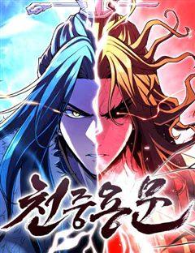

나노마신 같은 웹툰 추천

나노마신 · 현절무 / 금강불괴 / 한중월야
나노마신 재밌게 봤다면 이 웹툰들도 좋아할 거예요. 같은 장르이면서 천마, 참교육, 이능력배틀물 같은 요소가 겹치는 작품을, 겹치는 요소가 많은 순서로 20개 골랐어요.
2026-10-08 기준 · 네이버웹툰·카카오웹툰·레진코믹스 · 성인 작품 제외
내 취향으로 직접 골라 추천받기 →-
1
 네이버웹툰
네이버웹툰우주천마 3077
오랜 세월이 흘러 태산에 봉인된 천마가 눈을 떴을 때, 이미 인류는 방사능에 절여진 지구를 떠나 은하를 누비고 있었다.
천마SF먼치킨무협네이버웹툰에서 보기 → -
2
 네이버웹툰
네이버웹툰천마육성
마교의 태왕각주 ‘사마귀’의 명령으로 화산파 출몰 지역으로 파견나간 비객조. ‘설휘’는 화산파의 절대고수 ‘구종명’에게 죽임을 당할 위기에 처한다. 그때 눈 앞에 상태창이 나타나고 정찰 임무를 받기 직전으로 회귀하게 된다. 설휘는 자신이 전생에서 죽…
상태창게임먼치킨무협네이버웹툰에서 보기 → · 천마육성 같은 웹툰 → -
3
 네이버웹툰
네이버웹툰환생천마
철혈의 맹주, 강호의 절대자 '천하진'. 가문의 수치라 불리는 망나니 '벽리단'의 몸으로 깨어나다! 취미는 사기도박, 검은 창고에 박아둔지 오래. 하루아침에 천하제일인에서 천하의 쓰레기가 된 그는 다시 검을 잡고, 전생에서 이루지 못한 경지에 오르고…
천마먼치킨사이다무협네이버웹툰에서 보기 → -
4
 네이버웹툰
네이버웹툰천하제일 대사형
잔혹했던 정사대전에 반 강제적으로 끌려갔던 대사형 ‘혁무상’. 수많은 피가 흐른 전쟁에 참전한지 7년. 전쟁은 진즉 끝났음에도 돌아오지 않아 죽은 줄 알았다. 간신히 고향 땅을 밟은 혁무상이 보게 된 것은, 고작 삼류 흑도에게 핍박당해 무너져가는 고…
참교육먼치킨사이다무협네이버웹툰에서 보기 → -
5
 네이버웹툰
네이버웹툰괴력 난신
살인에서 삶의 즐거움을 느끼는 '겸살귀', 정(正). 대 연목검장의 셋째공자 목경운과 똑같이 생긴 얼굴을 가졌는데... "나의 대역이 되어라. 그러면 옥에서 나갈 수 있게 해 주마." "그 기회. 제게 주시겠습니까?" '촤악-!!!' 셋째공자를 죽여…
천마먼치킨무협네이버웹툰에서 보기 → · 괴력 난신 같은 웹툰 → -
6
 네이버웹툰
네이버웹툰절대군림
"이 강호, 제가 먹습니다!" 왼손에는 군자검을, 오른손에는 지옥도를 든 미스터리한 과일상 아들. 입담과 재주는 물론, 압도적인 무공 실력까지 갖춘 완벽한 그의 진짜 정체는 무엇일까. '강호제패'를 품은 스무 살 청년, '적이건(赤利乾)'의 유쾌한…
천마먼치킨무협네이버웹툰에서 보기 → · 절대군림 같은 웹툰 → -
7
 네이버웹툰
네이버웹툰절대회귀
"나를 과거로 보내주시오." 이 시대에서 그를 죽일 수 없다면, 과거로 돌아가면 되리라. 시간을 거스를 수 있는 '회귀대법(回歸大法)'으로 그토록 원하던 과거로 회귀한 한 남자. 가족도, 친구도, 삶도, 모두 잃었던 '검무극(劍無極)'의 복수를 위한…
참교육먼치킨무협네이버웹툰에서 보기 → · 절대회귀 같은 웹툰 → -
8
 네이버웹툰
네이버웹툰황제의 검
정난의 변에서 간신히 살아난 주윤문, 마교 천하제일 천마(天魔)와 소림사 육조 혜능(慧能)을 몸 안에 받아 천마서생 '파천'으로 재탄생하게 되는데… 절대지존을 향한 파천의 새로운 이야기가 시작된다!
참교육먼치킨무협네이버웹툰에서 보기 → -
9
 네이버웹툰
네이버웹툰천마는 조용히 살고싶다
'다음 생에는 반대로 살아보고 싶구나...' 오직 공포와 경외만이 전부였던 천마는 죽음의 순간 '증혼마공'을 제대로 익힐 수 있는 실마리를 얻는다. '증혼마공'은 타인의 혼백을 탐하기만 하는 게 아니었다. 그렇게 천마는 언제 죽을지 모르는 공자 벽태…
천마무협네이버웹툰에서 보기 → -
10
 네이버웹툰
네이버웹툰반로환동한 천마의 마경방송
천상천하 유아독존! 강호제일인 천마 '치유랑'은 정체불명의 힘에 의해 미지의 섬 '마경'에 갇히게 된다. 10년간 고독하게 살고 있던 와중 신비로운 기기를 통해 네 개의 세계가 합쳐진 것을 알게 되고, 세상과의 소통과 생존을 위해 반로환동을 결심하게…
천마먼치킨무협네이버웹툰에서 보기 → -
11
 네이버웹툰
네이버웹툰천마 아포칼립스
"천마가 하늘에 올랐으니,천하가 마도로 물들리라." 그렇게 무당파는 멸문했다. 마도천하가 도래하고 십년. 무당파의 유일한 생존자 유수는 사부 순양자의 살아남으라는 유언에 따라 마도천하를 전전하는데….
천마무협네이버웹툰에서 보기 → -
12
 네이버웹툰
네이버웹툰장씨세가 호위무사
‘당신이 부른 것이오. 나란 사람을... ’ 은둔고수 광휘. 호위무사 되다. 웹소설 원작 웰메이드 무협 시대극!
먼치킨사이다무협네이버웹툰에서 보기 → · 장씨세가 호위무사 같은 웹툰 → -
13
 네이버웹툰
네이버웹툰사상최강
‘천하 십대 고수’라고 불리는 자들. 인간의 한계를 뛰어넘은 그들은 서로를 견제하며 힘의 균형과 세상의 질서를 유지해왔다. 바로 ‘백도현’ 그가 나타나기 전까지는! 내공만으로 사상최강의 힘을 가진 남자 백도현의 시원한 한 방!
먼치킨사이다무협네이버웹툰에서 보기 → -
14

네이버웹툰천중용문
더없이 병약했던 천중문의 소문주 용화린. 결국, 무를 포기하고 데릴사위로 들어가 장사치의 삶을 살게 된다. 그렇게 큰 후회를 간직한 채 살아왔던 삶의 마지막에서 영영 만날 수 없으리라 여겼던 과거와 조우하게 되는데...! 초라하기 짝이 없었던 순간으…
먼치킨사이다무협네이버웹툰에서 보기 → -
15
 네이버웹툰
네이버웹툰정권으로 세계최강
아버지의 복수를 위해 10년간 폐관 수련에 들어간 진권. 마침내 하산한 그를 기다리고 있던 건, 원수보다도 낯선 세상이었다. 무림은 사라지고, 세상은 스킬이 지배하는 판타지 시대로 변해 있었다. 주먹과 도복밖에 남지 않은 진권. 하지만 시대가 바뀌었…
먼치킨사이다무협네이버웹툰에서 보기 → -
16레진코믹스
조선귀신전 [연재]
역병과 기근으로 눈뜬 악귀들이 조선시대를 집어삼켰다. 민호는 이곳에서 101번째 되살아나, 죽기 위한 여정을 시작한다.
게임무협레진코믹스에서 보기 → -
17
 네이버웹툰
네이버웹툰화산귀환
대 화산파 13대 제자.천하삼대검수 매화검존 청명. 천하를 혼란에 빠뜨린 고금제일마 천마의 목을 치고 십만대산의 정상에서 영면. 백 년의 시간을 뛰어넘어 아이의 몸으로 다시 살아나다. ......뭐? 화산이 망해? 이게 뭔 개소리야!?
먼치킨무협네이버웹툰에서 보기 → · 화산귀환 같은 웹툰 → -
18
 네이버웹툰
네이버웹툰마도전생기
정파무림 의천맹의 최강 살수, 천하진. 자유를 찾기 위해 탈출을 감행하지만 코앞에서 목숨을 잃고 만다. 그런데… '신교불패, 만마앙복. 삼공자님의 쾌유를 경하드리옵니다!' 무림의 공적, 마교의 삼공자로 전생해버렸다?! 정파무림 최강 비밀병기 천하진의…
먼치킨무협네이버웹툰에서 보기 → · 마도전생기 같은 웹툰 → -
19
 네이버웹툰
네이버웹툰절대검감
단전이 부숴졌다는 이유로 집에서는 내놓은 자식 취급을 받던 소운휘는 혈교에 납치되어서도 삼류 첩자로 살아왔다. 어느 날, 전설로만 알려진 검선비록을 찾는데 이용당하다 죽은 운휘는 10년 전, 혈교에 납치되던 그 날로 돌아가게 되고 검의 목소리를 듣는…
먼치킨무협네이버웹툰에서 보기 → · 절대검감 같은 웹툰 → -
20
 네이버웹툰
네이버웹툰무사만리행
[ 2025 오늘의 우리만화 수상작 ] 2세기 후반, 마한연맹 고리국(古離國)의 무사 나루. 믿었던 스승의 배신으로 나라가 멸망하고, 평생을 바쳐 지켜주겠노라 맹세했던 소단공주의 행방이 묘연해진다. 소단 공주의 행방을 쫓던 나루는 서역으로 떠났다는…
먼치킨무협네이버웹툰에서 보기 →